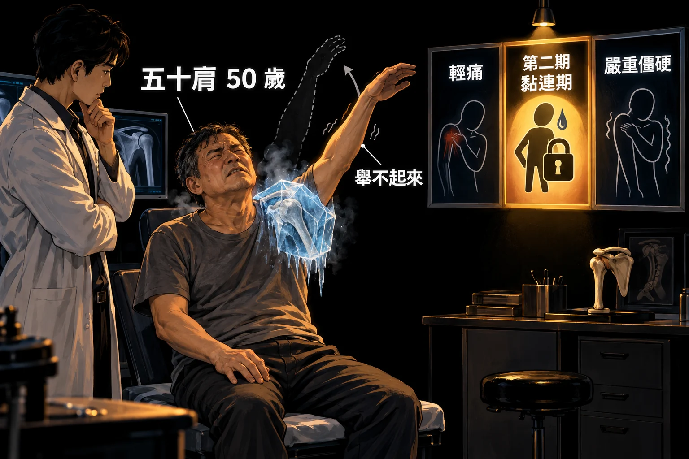
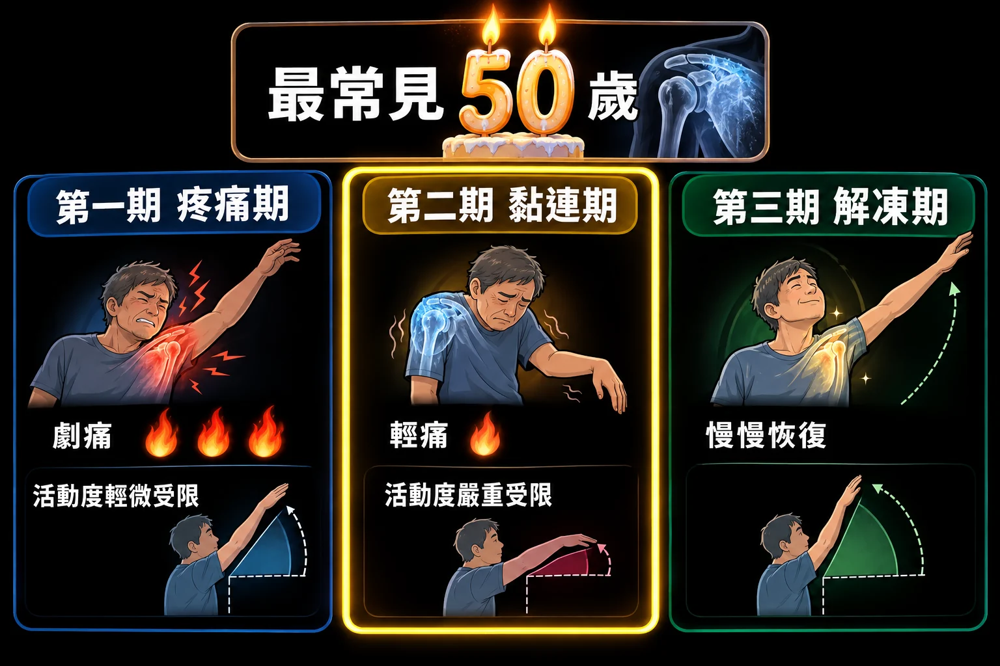
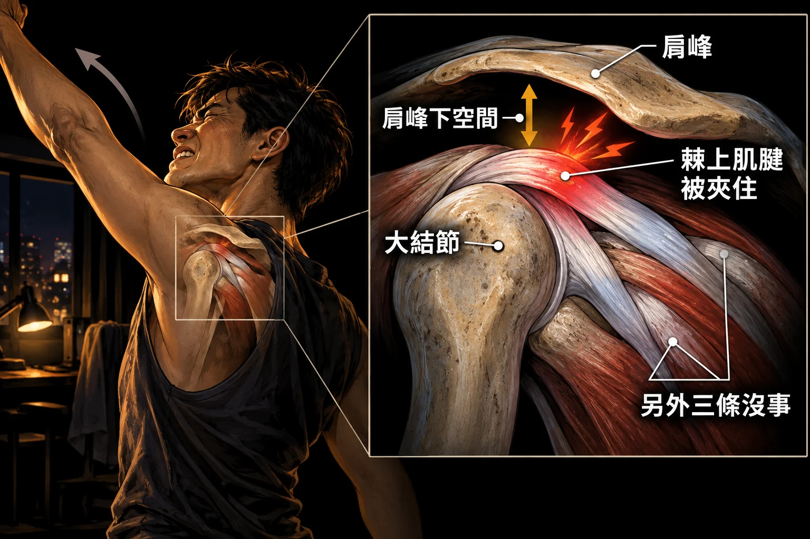
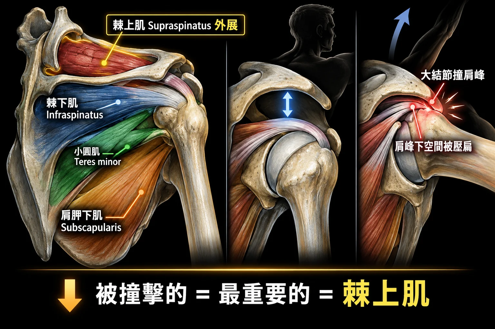
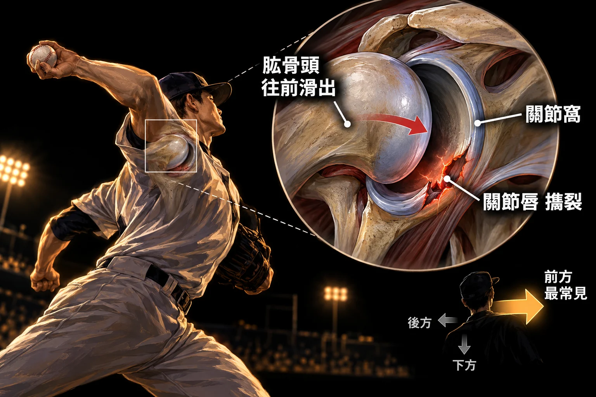
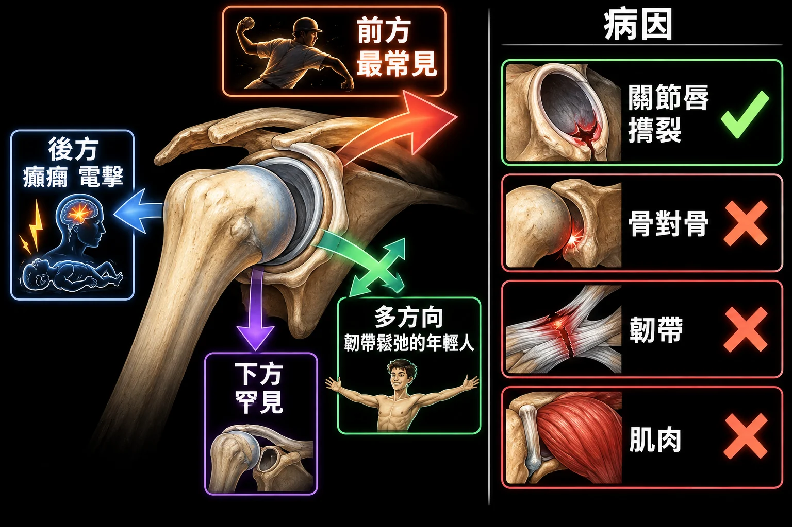

The most common age of Frozen Shoulder is
- (A) 50
- (B) 30
- (C) 80
- (D) 10
答案與詳解
中文題目：冷凍肩最常見的年齡是？
(A) 50 歲
(B) 30 歲
(C) 80 歲
(D) 10 歲
答案：(A) 50
詳解原文:「老師上課提及，冷凍肩又稱五十肩，代表50歲年齡層最常發生」
出處：陳勝凱 冷凍肩及撞擊肩症候群/不穩性肩關節(ppt pg.26) ｜ BM111 BLOCK-8 期末考詳解.pdf 第 70 頁
三年九題，每年固定三題、三個主題各一：冷凍肩（五十肩，最常見於 50 歲；第二期黏連期是輕痛、嚴重僵硬）、撞擊肩（被撞擊的、也是最重要的旋轉肌是棘上肌 supraspinatus）、不穩性肩（最常見方向是前方，病因是關節唇 labrum 被撕裂）。111 年和 113 年的三題一字不差。
這一科只要三個詞：50、supraspinatus、anterior，外加 phase 2 與 labrum。

冷凍肩（frozen shoulder）俗稱五十肩——名字就是答案：最常見的年齡是 50 歲。111 年、113 年考同一題，選項 50、30、80、10，老師上課口頭說過，共筆也寫「秒選」。
它分三期。第一期是疼痛期，痛得厲害、活動度剛開始受限；第二期是黏連期（adhesion phase）：關節囊黏住了，僵硬非常嚴重、活動度嚴重受限，但疼痛反而緩解、只剩輕痛；第三期是解凍期，慢慢恢復。112 年問 phase 2——「輕痛、嚴重受限」，不是「劇痛、輕微受限」（那是第一期的樣子）。

詳解原文（111）:「老師上課提及，冷凍肩又稱五十肩，代表50歲年齡層最常發生」
詳解原文（112）:「在phase 2(adhesion phase)中，病人的表現為 1. severe stiffness( severe limited ROM) 2. pain relief (mild pain) 因此選C」
最常見年齡：50 歲。
Phase 2（黏連期）：mild pain ＋ severe limited ROM。
The most common age of Frozen Shoulder is
中文題目：冷凍肩最常見的年齡是？
(A) 50 歲
(B) 30 歲
(C) 80 歲
(D) 10 歲
答案：(A) 50
詳解原文:「老師上課提及，冷凍肩又稱五十肩，代表50歲年齡層最常發生」
出處：陳勝凱 冷凍肩及撞擊肩症候群/不穩性肩關節(ppt pg.26) ｜ BM111 BLOCK-8 期末考詳解.pdf 第 70 頁
Frozen shoulder at phase 2 is
中文題目：冷凍肩第二期的表現是？
(A) 劇烈疼痛、活動度輕微受限
(B) 無疼痛、活動度不受限
(C) 輕微疼痛、活動度嚴重受限
(D) 以上皆非
答案：C
詳解原文:「在phase 2(adhesion phase)中，病人的表現為 1. severe stiffness( severe limited ROM) 2. pain relief (mild pain) 因此選C」
出處：陳勝凱 冷凍肩及撞擊肩症候群/不穩性肩關節 (ppt pg.34) ｜ BM112_Block 8 期末考.pdf 第 62 頁
The most common age of Frozen Shoulder is?
中文題目：冷凍肩最常見的年齡是？
(A) 50 歲
(B) 30 歲
(C) 80 歲
(D) 10 歲
答案：(A)
詳解原文:「Frozen shoulder又稱五十肩，秒選(A)。雖然老師講義沒有提到幾歲，但依照常識 & 老師上課有口頭提到50歲是frozen shoulder好發高峰也可選得出(A)。」
出處：冷凍肩及撞擊肩症候群/不穩性肩關節 陳勝凱 老師上課口述 + 常識 + 醫學系共筆 ｜ BM113_Block8期末考詳解.pdf 第 58 頁

旋轉肌群四條：棘上肌 supraspinatus、棘下肌 infraspinatus、小圓肌 teres minor、肩胛下肌 subscapularis。撞擊症候群的機制是舉手時肱骨大結節撞到肩峰，而肩峰下面那個狹窄的空間，正好是棘上肌腱通過的地方——所以被撞擊的旋轉肌病灶是棘上肌，它是「位置最上面的那一條」。111、113 年同一題，答案都是 supraspinatus。
112 年換個問法：「最重要的旋轉肌是哪條？」答案還是棘上肌（負責手臂外展、也是最常出事的那條）。共筆同學抱怨這題老師沒講清楚、講義也沒寫——但三年下來，這一科只要看到旋轉肌四選一，就選 supraspinatus。

詳解原文（111）:「The most commonly affected muscle in the Rotator Cuff group is the one situated top-most: Supraspinatus.」
詳解原文（113）:「在描述撞擊症候群 (Impingement Syndrome) 的頁面，其機制是大結節(Greater Tuberosity) 撞擊到肩峰 (Acromion) 。這個空間（肩峰下空間）正是棘上肌腱通過的地方。」
詳解原文（112）:「Supraspinatus —performs abduction of the arm」
被撞擊的旋轉肌：棘上肌。最重要的旋轉肌：棘上肌。機制：大結節撞肩峰，肩峰下空間夾住棘上肌腱。
Which is impinged rotator cuff lesion?
中文題目：被撞擊的旋轉肌病灶是哪一條？
(A) 棘上肌
(B) 棘下肌
(C) 小圓肌
(D) 肩胛下肌
答案：(A) supraspinatus
詳解原文:「The most commonly affected muscle in the Rotator Cuff group is the one situated top-most: Supraspinatus.」
出處：陳勝凱 冷凍肩及撞擊肩症候群/不穩性肩關節(ppt pg.52) ｜ BM111 BLOCK-8 期末考詳解.pdf 第 68 頁
The most important Rotator Cuff muscle is
中文題目：最重要的旋轉肌是？
(A) 小圓肌
(B) 肩胛下肌
(C) 棘上肌
(D) 棘下肌
答案：C
詳解原文:「Supraspinatus —performs abduction of the arm Infraspinatus — external rotator of the shoulder Teres minor— externally (laterally) rotate the humerus, as well as adduction. ... 小弟弟我覺得老師提議沒有講得很清楚，且講義也沒有特別寫。」
共筆自己也說題目不清楚，但答案就是 supraspinatus。
出處：陳勝凱 冷凍肩及撞擊肩症候群/不穩性肩關節 ｜ BM112_Block 8 期末考.pdf 第 64 頁
Which is Impinged rotator cuff lesion :
中文題目：被撞擊的旋轉肌病灶是哪一條？
(A) 棘上肌
(B) 棘下肌
(C) 小圓肌
(D) 肩胛下肌
答案：(A)
詳解原文:「在描述撞擊症候群 (Impingement Syndrome) 的頁面，其機制是大結節(Greater Tuberosity) 撞擊到肩峰 (Acromion) 。這個空間（肩峰下空間）正是棘上肌腱通過的地方。」
出處：陳勝凱-冷凍肩及撞擊肩症候群/不穩性肩關節 ppt p 39. 51. ｜ BM113_Block8期末考詳解.pdf 第 55 頁

肩關節是全身最容易脫臼的關節，而最常見的方向是前方（anterior）——外傷性脫臼絕大多數往前。後方脫臼少見，常跟癲癇發作或電擊有關；下方脫臼（直立脫臼）非常罕見；多方向不穩定則出現在韌帶鬆弛的年輕人，但發生率仍低於前方。111、113 年同一題。
為什麼會變成習慣性脫臼？112 年考病因：外力超過關節唇（labrum）能承受的力量，關節唇撕裂——關節窩邊緣那圈加深關節窩的軟骨環一旦破了，肱骨頭就一再滑出去。不是骨頭對骨頭、不是韌帶、也不是肌肉。

詳解原文（113）:「肩關節不穩定最常見的方向是前方，佔多數的外傷性肩關節脫臼。後方脫臼較少見，常與癲癇發作或電擊有關。下方脫臼（俗稱 “直立脫臼”）非常罕見。」
詳解原文（112）:「習慣性脫臼的主要病因 → 外力超過關節唇(labrum)能夠承受的力量後導致斷裂」
最常見方向：前方。病因：關節唇撕裂。
The common direction of shoulder instability is
中文題目：肩關節不穩定常見的方向是？
(A) 前方
(B) 後方
(C) 下方
(D) 多方向
答案：(A) ant.
詳解原文:「講義上沒有特別提到，但最常出現的dislocation是anterior，也可以根據解剖構造推測。」
出處：陳勝凱 冷凍肩及撞擊肩症候群/不穩性肩關節(ppt pg.6) ｜ BM111 BLOCK-8 期末考詳解.pdf 第 69 頁
The pathogenesis of shoulder instability is
中文題目：肩關節不穩定的致病機轉是？
(A) 骨頭對骨頭
(B) 韌帶
(C) 關節唇
(D) 肌肉
答案：C
詳解原文:「習慣性脫臼的主要病因 → 外力超過關節唇(labrum)能夠承受的力量後導致斷裂」
出處：陳勝凱 冷凍肩及撞擊肩症候群/不穩性肩關節 (ppt pg.13) ｜ BM112_Block 8 期末考.pdf 第 63 頁
The common direction of shoulder instability is
中文題目：肩關節不穩定常見的方向是？
(A) 前方
(B) 後方
(C) 下方
(D) 多方向
答案：(A)
詳解原文:「肩關節不穩定最常見的方向是前方，佔多數的外傷性肩關節脫臼。後方脫臼較少見，常與癲癇發作或電擊有關。下方脫臼（俗稱 “直立脫臼”）非常罕見。多方向不穩定通常出現在有韌帶鬆弛的年輕患者，但發生率低於前方不穩定。」
出處：陳勝凱-冷凍肩及撞擊肩症候群/不穩性肩關節 ppt p7 ｜ BM113_Block8期末考詳解.pdf 第 57 頁
名字就是年齡：50。
黏住了就不痛但動不了：mild pain、severe limited ROM。
phase 2 是 severe limited ROM。
撞的是最上面那條：supraspinatus。
SITS；考題四選一永遠選 S（supraspinatus）。
三年三題的共同答案。
都是干擾項。
大結節撞肩峰＝撞擊機制。
肩峰下空間是棘上肌腱的走道。
ant. 兩年同答案。
後方＝癲癇、電擊；下方＝罕見。
112 年答案；不是 bone、ligament、muscle。
同考點：111 第88題、112 第63題 — 旋轉肌群中被撞擊、也最重要的是棘上肌 supraspinatus（大結節撞肩峰，肩峰下空間正是棘上肌腱通過處）
Which is Impinged rotator cuff lesion :
中文題目：被撞擊的旋轉肌病灶是哪一條？
(A) 棘上肌
(B) 棘下肌
(C) 小圓肌
(D) 肩胛下肌
答案：(A)
同題再考：大結節撞肩峰，夾住棘上肌腱。 ｜ BM113_Block8期末考詳解 第 55 頁
同考點：111 第89題 — 肩關節不穩定最常見的方向是前方（anterior）
The common direction of shoulder instability is
中文題目：肩關節不穩定常見的方向是？
(A) 前方
(B) 後方
(C) 下方
(D) 多方向
答案：(A)
同題再考：前方最常見；後方與癲癇電擊有關、下方罕見。 ｜ BM113_Block8期末考詳解 第 57 頁
同考點：111 第90題 — 冷凍肩（五十肩）最常見於 50 歲
The most common age of Frozen Shoulder is?
中文題目：冷凍肩最常見的年齡是？
(A) 50 歲
(B) 30 歲
(C) 80 歲
(D) 10 歲
答案：(A)
同題再考：五十肩，秒選 50。 ｜ BM113_Block8期末考詳解 第 58 頁
Frozen shoulder at phase 2 is
中文題目：冷凍肩第二期的表現是？
(A) 劇烈疼痛、活動度輕微受限
(B) 無疼痛、活動度不受限
(C) 輕微疼痛、活動度嚴重受限
(D) 以上皆非
答案：C
Phase 2 黏連期：輕痛、活動度嚴重受限。 ｜ BM112_Block 8 期末考 第 62 頁
The pathogenesis of shoulder instability is
中文題目：肩關節不穩定的致病機轉是？
(A) 骨頭對骨頭
(B) 韌帶
(C) 關節唇
(D) 肌肉
答案：C
習慣性脫臼的病因：關節唇撕裂。 ｜ BM112_Block 8 期末考 第 63 頁
同考點：111 第88題、113 第61題 — 旋轉肌群中被撞擊、也最重要的是棘上肌 supraspinatus（大結節撞肩峰，肩峰下空間正是棘上肌腱通過處）
The most important Rotator Cuff muscle is
中文題目：最重要的旋轉肌是？
(A) 小圓肌
(B) 肩胛下肌
(C) 棘上肌
(D) 棘下肌
答案：C
最重要的旋轉肌：棘上肌（外展）。 ｜ BM112_Block 8 期末考 第 64 頁
同考點：112 第63題、113 第61題 — 旋轉肌群中被撞擊、也最重要的是棘上肌 supraspinatus（大結節撞肩峰，肩峰下空間正是棘上肌腱通過處）
Which is impinged rotator cuff lesion?
中文題目：被撞擊的旋轉肌病灶是哪一條？
(A) 棘上肌
(B) 棘下肌
(C) 小圓肌
(D) 肩胛下肌
答案：(A) supraspinatus
被撞擊的旋轉肌是最上面那條：棘上肌。 ｜ BM111 BLOCK-8 期末考詳解 第 68 頁
同考點：113 第62題 — 肩關節不穩定最常見的方向是前方（anterior）
The common direction of shoulder instability is
中文題目：肩關節不穩定常見的方向是？
(A) 前方
(B) 後方
(C) 下方
(D) 多方向
答案：(A) ant.
肩關節不穩定最常見方向：前方。 ｜ BM111 BLOCK-8 期末考詳解 第 69 頁
同考點：113 第63題 — 冷凍肩（五十肩）最常見於 50 歲
The most common age of Frozen Shoulder is
中文題目：冷凍肩最常見的年齡是？
(A) 50 歲
(B) 30 歲
(C) 80 歲
(D) 10 歲
答案：(A) 50
冷凍肩＝五十肩，最常見 50 歲。 ｜ BM111 BLOCK-8 期末考詳解 第 70 頁
50、supraspinatus、anterior。再加 phase 2 輕痛重僵、labrum 撕裂——這一科就結束了。
留言板
看不懂、想補充、發現錯誤都歡迎留言；填個暱稱就能發。